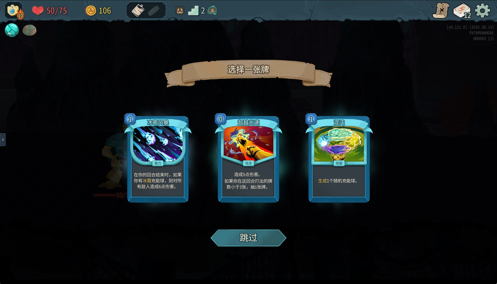

动态牌组：每一张牌都是选择
《杀戮尖塔》的卡牌系统与传统卡牌游戏最大的区别，在于你不需要在开局前构筑牌组。牌组是空的、弱的、临时的，它在爬塔过程中被一局局地拼出来：每场战斗结束后从三张随机卡牌中选择一张加入牌组，也可以选择跳过。
这个"跳过"选项是整套设计的支点。如果每次都必须选一张，牌组只会单向膨胀；有了跳过，玩家就必须判断"这张牌值不值得占用我的二十几张额度"。
卡牌大致分为三类：攻击牌负责造成伤害，技能牌负责格挡与各种辅助效果，能力牌则在打出后持续整场战斗。在此之上还有稀有度的分层，以及诅咒牌、状态牌这一类专门用来添麻烦的负面牌。
开发团队的设计目标是让每张卡都有存在的位置——没有一张废卡。这不是说每张卡在任何情况下都强，而是说总存在某种构筑、某种局面能让它发挥作用。
一个直接的例子是初始牌"打击"：它看起来最平庸，但战士的"完美打击"会根据牌组中"打击"牌的数量提升伤害，于是最基础的牌反而成了构筑的核心素材。
牌组的精简程度直接影响关键牌的上手率。因为每回合抽到的牌是有限的，牌组越厚，你越难在需要的时候摸到那一张关键牌。一般经验是二十到二十五张比较高效：足够容纳一套完整的功能组合，又不至于让循环变慢。
{kind=link}

卡牌池速查
下面是十四张有代表性的卡牌，覆盖三大类与负面牌。可以用上方的按钮按类型过滤，或者直接搜索名称与效果关键词。
初始攻击牌，造成 6 点伤害。四名角色都从这张牌开始，它也是"完美打击"的计数对象。
初始技能牌，获得 5 点格挡。每回合结束格挡都会清零，因此它衡量的是"这一回合能不能活下来"。
同时造成伤害并获得格挡，一张牌完成攻防两件事。费用比单独的打击或防御更高，但省下一次出牌机会。
能力牌：在每个回合结束时获得若干点格挡。它把"防御"从一次性操作变成持续生效的被动，越早打出收益越高。
造成伤害并抽若干张牌。它是战士的"循环引擎"：伤害本身不高，但能让你在同一回合里多摸几张牌。
抽若干张牌但不能在当回合打出攻击牌。典型的"先抽牌、再规划"工具，适合在防御回合提前整理手牌。
失去生命，换取可立即使用的能量。战士的"卖血流"由此展开：把血量直接兑换成当回合的行动次数。
伤害随牌组中"打击"牌的数量提升。它让最基础的初始牌变成需要守护的资产，也让"该不该删打击"成为一个真正的取舍。
造成的伤害等于当前格挡值。于是防御牌不再是"这回合没输出"的妥协，叠格挡本身就成了进攻手段。
能力牌：每回合开始时获得力量。它在前几回合几乎不产生价值，但拖得越久收益越高，是"用时间换强度"的代表。
造成伤害并施加中毒。静默猎手的核心组件之一——中毒无视格挡、按回合持续结算，专治高护甲敌人。
抽牌并弃牌。看起来只是把手牌换一换，实际上它能触发一系列"弃牌时"的连带效果，是弃牌流的启动键。
无法被打出的诅咒牌，只要留在手里就会持续造成伤害。它通常由事件或遗物塞进牌组，只能靠商店购买移除服务来处理。
无法被打出的状态牌，会占用手牌位置。它通常在战斗中由敌人施加，是"手牌也是一种资源"这条规则的负面证明。
遗物：被动规则的改写者
如果说卡牌决定了"你这一回合能做什么"，遗物决定的就是"你整局游戏按什么规则运行"。
遗物不进入牌库，不占用抽牌，也不消耗能量。它们以被动效果持续生效，从最简单的属性加成，到彻底改写一条基础规则。遗物大致按稀有度分层：初始遗物、普通遗物、罕见遗物、稀有遗物，以及击败每层 Boss 后获得的 Boss 遗物。全部遗物有一百八十余件。
其中真正塑造构筑思路的是后两类：
- 稀有遗物往往提供无法用卡牌复制的独特效果，遇到就值得围绕它改牌组。
- Boss 遗物几乎都带有"明显的正面效果 + 不可忽视的代价"，选择它们等于给整局游戏定下一个基调。
Boss 遗物不是纯粹的奖励。它会一直挂在你身上，包括那条负面效果。因此"该选哪个 Boss 遗物"常常比"该选哪张牌"更影响一局游戏的走向。
遗物还可以被替换或升级。铁甲战士的燃烧之血在特定条件下能换成更强的黑血，回复量随之提高——同一个位置、同一个功能，但效率更高。这也说明遗物的设计并不只追求"多"，也追求同一效果在不同强度层级上的分布。
{kind=link}
{kind=link}
遗物池速查
下面按稀有度列出十四个有代表性的遗物。可以按类别过滤，也可以搜索效果关键词。注意 Boss 遗物一栏几乎每一条都带代价。
铁甲战士专属。每场战斗结束后回复 6 点生命，让"卖血"这件事有了回本渠道。
静默猎手专属。战斗开始时额外抽 2 张牌，直接提高首回合的选择空间与循环速度。
战斗中的第一张攻击牌额外造成 8 点伤害。它奖励"开局就打"的节奏，也影响你首回合的出牌顺序。
最大生命值提升 14 点。最朴素的遗物类型——不加机制，只加容错，但对高进阶的窄血量来说分量很重。
战斗第一回合获得 10 点格挡。它专门解决"开局被先手打一波"的问题，对慢启动的机器人尤其有用。
每三个回合提供一点额外能量。收益不高但持续整场，属于"越拖越舒服"的节奏型遗物。
每回合结束时若手牌为空，则下回合额外抽 2 张牌。它把"把手牌打干净"变成一个值得刻意追求的目标。
能量不再在回合结束时清零，可以留存到之后使用。它彻底改变了"攒一波再爆发"的可行性。
战斗结束后获得额外金币，但每次都会让牌组多受一张诅咒。用未来的麻烦换当下的资源，是很典型的尖塔式交易。
当受到的伤害小于等于 5 点时，将其完全抵消。它把大量小伤害直接变成零，对特定敌人几乎是免疫。
战斗开始时获得 1 点额外能量，但每回合结束时失去 1 点生命。用小额持续失血换取长期的行动次数。
每回合额外获得一点能量，代价是永远不能在篝火处休息回复生命值。它把续航交给了药水、遗物和卡牌。
同样是每回合额外一点能量，代价是每次开启宝箱都会获得一张诅咒牌。收益稳定，麻烦会累积。
手牌不再于回合结束时被弃掉。它让"攒手牌"成为可行的策略，也要求玩家处理好手牌上限，否则再抽牌就会受阻。
两套系统如何互相放大
卡牌与遗物真正有意思的地方，是它们之间的化学反应——一件遗物能把一张平庸的牌变成核心，一张牌也能把一件遗物的代价抵消掉。
几个常见的放大方式：
- 冰淇淋让能量可以跨回合留存，于是所有"高费、高爆发"的牌都变得更可用，而不再要求你当回合正好抽到它们。
- 金字塔让手牌不再被弃掉，于是"早有准备"这类需要弃牌配合的牌价值下降，而各种"有条件才生效"的牌价值上升。
- 全身撞击把格挡值直接换算成伤害，于是金属化这类持续提供格挡的能力牌同时变成了输出牌。
- 咖啡杯砍掉了篝火回血，于是燃烧之血、再生类卡牌、甚至"金质神像 + 更多金币买药水"的组合都变成了续航来源。
这也是《杀戮尖塔》最难被"抄作业"的地方：同一张牌在不同遗物组合下的强度可以差出几个层级，因此每一局的牌组都需要重新评估。
- 牌组在局内动态构建，每场战斗后三选一，且可以跳过——跳过是控制牌组厚度的关键。
- 卡牌分攻击、技能、能力三类，另有诅咒牌与状态牌作为负面干扰。
- 设计目标是"没有一张废卡"：完美打击依赖"打击"，全身撞击依赖格挡值。
- 牌组以 20 到 25 张较为高效；遗物不占牌库，全部约有一百八十余件。
- Boss 遗物普遍"有利有弊"，如咖啡杯给能量但禁止篝火回血、诅咒钥匙给能量但开箱得诅咒。